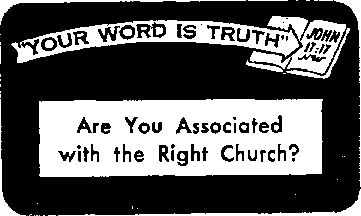

That marvelous promise is based on a sure foundation
The U.S. Supreme Court’s momentous decision and its effect upon the nation --
Helpful hints on a serious problem
--
THE MISSION OF THIS JOURNAL
News sources that are able to keep you awake to the vital issues of our times must be unfettered by censorship and selfish interests. “Awake 1” has no fetters. It recognizes facts, faces facts, is free to publish facts. It is not bound by political ambitions or obligations; it is unhampered by advertisers whose toes must not be trodden, on; it is unprejudiced by traditional creeds. This journal keeps itself free that it may speak freely to you. But it does not abuse its freedom. It maintains integrity to truth,
“Awake!’* uses the regular news channels, but is not dependent on them. Its own correspondents are on all continents, in scores of nations. From the four corners of the earth their uncensored, on-the-scenes reports come to you through these columns. This journal’s viewpoint is not narrow, but is international. It is read in many nations, in many languages, by persons of all ages. Through its pages many fields of knowledge pass in review—government, commerce, religion, history, geography, science, social conditions, natural wonders—why, its cover* age is as broad as the earth and as high as the heavens.
“Awake !’* pledges itself to righteous principles, to exposing hidden foes and subtle dangers, to championing freedom, for all, to comforting mourners and strengthening those disheartened by the failures of a delinquent world, reflecting sure hope for the establishment of a righteous New World.
Get acquainted with “Awake!” K^ep awake by reading “Awake ["
Published Semimonthly By WATCHTOWER BIBLE AND TRACT SOCIETY* INC.
117 AOjum Street Brooklyn lh N. Y., U. S- A.
N. H, Knorr, Grant Suiter* Secretary
Printing this issue: 1,250,000
Five cents a copy
Languages in which the magazine is published:
Remittances should be sent to others in your country in compliance with regulations to guarantee safe delivery of money. Remittances are accepted at Brooklyn from countries where no office is located, by certified money order only. Subscription rates are different. These are listed in local currencies (with renewal blank)
It is sent at least two weeks before subscription expires. Change of address when sent to our office may be expected effective within one month. Send your old as well as new address.
Act of March 3, 1879. Printed in U.S.A
Semi-monthly—African, English, Finnish, French, German, Dutch, Norwegian, Spanish, Swedish. Monthly—Danish, Greek, Portuguese, Turkish.
Office Yearly subscription Rate
Address, U.S.A. 117 Adams St., Brooklyn 1, N.Y.
21 Parkeston Ave., New Rochelle, N.Y. U.S.A.
Canada, 40 Lincoln Ave., Toronto 5, Ontario. England, 34 Graven Court, London, W.2 7a Siuth Afrit*, hivate Bat, P.O. Standtfodteln, rrarjsTiaJ 7n
(entered as wrornJ-class matter at Brooklyn. N. Y
CONTENTS
The Bible's Wisdom versus Man’s
“War Babies Bigger Problem than Planes” 8
Rescuer Hastens to Aid Rescuers
New York Police Force Cheers McCarthy 19
Retirement: Blight or Blessing?
Turbulent Tigris Threatens Baghdad
“Your Word Is Truth’’
Are You Associated with
Jehovah’s Witnesses Preach
The Bible’s Wisdom versus Man’s
GOD’S Word tells us that “the fool says in his heart, ‘There is no God.’ ” Not that he necessarily says so with his mouth, but in that he pursues a course of action which ignores God’s laws he says in effect, ‘I do not believe that God exists.’ Wise in his own conceits he mocks at God’s statement “that the way of man is not in himself, that it is not in man who walks to direct his steps.” (Psalm 14:1; Jeremiah 10:23. Rev. Stan. Ver.) And so he hotly pursues his own kind of wisdom. And with what results?
In September 1936, at the end of two weeks of reading of learned papers at the Tercentenary Conferences of Arts and Sciences at Harvard University, it was reported that man had made much progress in the physical sciences, but that he “had added practically nothing to the control of his personal and social behavior. Though men were destined by medicine and sanitation for a longer life, the frequency of mental illness was growing at an alarming rate. Individuals were more at war with themselves, nations were more liable to internal strife, and the world farther from international peace than ever before.”—Redis~ covery of Man, Link.
Had men listened to the wisdom that is from above they would not find themselves in such a sorry state, for it inculcates self-control, being “first of all chaste, then peaceable, reasonable, ready to obey, full of mercy and good fruits, not making partial distinctions, not hypocritical.” It further tells us that “he who is slow to anger is better than the mighty, and he who rules his spirit than he who takes a city.”—James 3:17, New World Trans.; Proverbs 16:32, Rev. Stan. Ver.
The report at Harvard was made eighteen years ago. Have men since then changed their ways, improved matters by learning to exercise self-control, or have matters gone from bad to worse? When we view such spectacles as the strife within the Republican party at Washington, D.C., the strife within the Labor party in England for control, the strife between England and the United States, not to say anything about the strife between the East and the West, it certainly is apparent that man has not made rea] progress. Highlighting this truth is the statement made by B. Wallace as quoted in The Scientific Monthly, January, 1954, to the effeot that “our present predicament is due more than anything else to the fact that we have learned to understand and control to a terrifying extent the forces of nature outside of us, but not those embodied in ourselves.”
Truly, “the wise men are put to shame, they are dismayed and taken: lo, they have rejected the word of Jehovah; and what manner of wisdom is in them?” —Jeremiah 8:9, Am. Stan. Ver.
SOON AN EARTH
WITHOUT CRIME
WHAT do you think of a town infested with so many thieves, thugs, gangsters, kidnapers, mani-
must first find out when crime began.
A criminal is one who commits a wrongful act, one
Never before in Hw hivtoqr of Rian has crime been to great. Does this hideous flood of crim* distress j and sicken you? Then । ; take heart, because j j the time has come, a* ? : the fa Naw/ng article ■ ! shows, for crime to i be smashed forever
. ---------- . .. i« i|» i
acs, Cutthroats and sexual degenerates that it is dangerous to go out at night? Such a law-defying town, though we may be unwilling to realize it fully, is the one we live in—our home-town planet, the earth. How are we to explain this, that the weeds of wickedness flourish on an earth that has come out of the shadow of the Dark Ages and now bathes in the light of education? What is the significance of this foul condition? The time has come to answer these questions.
Just why a record-breaking crop of criminals now camps at the doorstep of an enlightened generation is a problem that perplexes the wisest heads on this planet. Sociologists proffer their reasons for crime: poverty, poor environment and a lack of love. But lol the great mystery: the majority of people subjected to these influences do not become criminals. Further, crime’s grisly head crops up among the ranks of the educated and wealthy. In governmental high places crime is so abundant that innumerable political campaigns highlight the theme "It’s time to change,” because of the corruption. And is not the list of kings and emperors who were murderers as well as rulers almost endless? Certainly, then, the chief cause of crime cannot be environment or poverty. There must be a cause of crime hidden to the brainy men of this world. To ascertain the cause of crime we against rightful law and authority. Who, then, was the very first criminal? The name of Cain quickly comes to the mind of many people. Cain was a murderer. He cold-bloodedly slew his brother Abel. Then he added to his crime by lying to Jehovah God, saying that he did not know where his brother was. But can we say that Cain was the very first criminal? For an answer let us read the words of the apostle of Christ Jesus, who said; “We should have love for one another; not like Cain, who originated with the wicked one and slaughtered his brother.” (1 John 3:11,12, New World Trans.) Note that the apostle said that Cain originated with “the wicked one.” Clearly, then, this “wicked one” must have been a criminal before Cain was. To identify this “wicked one” is to name the very first criminal in the universe.
We can unmask the very first criminal by consulting an expert on crime, the Son of God. Speaking to the murder-minded religious people of his day Jesus linked them with the first criminal: “You are from your father the Devil and you wish to do the desires of your father. That one was a manslayer when he began, and he did not stand fast in the truth, because truth is not in him. When he speaks the lie, he speaks according to his own disposition, because he is a liar and the father of the lie.” Here,
then, is that “wicked one,” the first criminal, the introducer of crime into the universe—Satan the Devil. Caln and those Jewish religionists were under the power of the wicked one. Today we cannot escape the fact that “the whole world is lying in the power of the wicked one,” the first criminal. No wonder, in spite of all man’s law-enforcement agencies, crime has never been uprooted, for its roots lie in a superhuman wicked one.—John 8:44; 1 John 5:19, New World Trans.
The archcriminal Satan introduced crime to our home-town planet by lying to Eve. Through the serpent he told her that she would not die if she ate of a certain tree. It was against the law of God for Eve to eat of this tree. Yet she succumbed to Satan’s lie and partook of the forbidden tree. For the first time on the earth itself crime had been committed. Later Adam, under no delusion as Eve was, violated God’s law and became a gross criminal. Both Adam and Eve were guilty of the worst kind of crime, one against their King-Creator. It was high treason. And this crime, as it does today under the laws of men, brought the death penalty. Adam was no longer perfect. His children, born after his monstrous crime, inherited criminal tendencies. It is these inborn tendencies that Satan stimulates today. -
Originally that mighty spirit creature that became the Devil was not a criminal. He was a rightftus cherub of God’s creation. He was given a special assignment by God: the protectorate over Adam and Eve in Eden. It was his duty to see that crime never broke out on the earth, and if it did he was immediately to stamp it out. Of this cherub the Bible says: “Thou wast the anointed cherub that covereth: . . . Thou wast perfect in thy ways from the day that thou wast created, till unrighteousness was found in thee.” (Ezekiel 28:14, 15, Am. Btan. Ver.) Thus the 'covering cherub’ abandoned himself to unrighteousness. He took up a criminal career. He wanted that which was wrong, to be like the Most High God, to rule over a territory just as God did.
For the crime of treason "the Judge of all the earth,” Jehovah, sentenced the first criminal to death. But he deferred the actual execution of the sentence that the issue of God’s supremacy .could be fully proved. In sentencing the archvillain, Jehovah said: “I shall put enmity between you and the woman and between your seed and her seed. He will bruise you in the head and you will bruise him in the heel.” This was a prophecy foretelling how the great stimulator of crime would be caught and crushed, A great Crime Smasher was foretold, one who would finally crush the serpent’s head. This was to be the seed of God’s “woman” or organization, Christ Jesus. But before the Son of God began his crime-destroying work, the greatest of all crimes had to occur, ‘the bruising of the seed in the heel.’ This happened A.D. 33, when Christ Jesus was foully murdered. “You disowned that holy and righteous one, and you asked for a man, a murderer, to be freely granted to you, whereas you killed the Chief Agent of life." On the criminal calendar, this, the murder of God’s Son, was the most wicked of all. But God healed the wound by raising Christ from the dead. This Seed-King is soon to smash all crime, for that is the job that the Father has given him: “For this purpose the Son of God was made manifest, namely, to break up the works of the Devil.”—Genesis 18:25; 3:15; Acts 3:14,15; 1 John 3:8, New World Trans.
“The Increasing of Lawlessness"
How do we know that Christ will soon break up all crime in the universe ? Because present conditions in the world fit Bible prophecies pertaining to the “last days” of
Satan’s criminal rule over mankind. According to the Bible at least thirty-nine different happenings go to make up the “last days” sign. All these happenings must , come in intensified doses upon one generation to comprise the sign. At Matthew chapter twenty-four Jesus enumerated some of the happenings: world wars, famines, an unusual number of earthquakes and distress of nations. But we are particularly interested now in verse 12 of that chapter. Here Jesus describes a feature of the “last days” sign: “the increasing of lawlessness.” Thus Jesus foretold that, despite the educational advancement which a “last days" world would certainly have, a-vicious crime wave would slap mankind, one utterly unparalleled in history.
Well, then, do we see this “increasing of lawlessness” ? Let us allow the daily reading of newspapers and magazines to provide the answer. The U. S. News <£ World Re-port, issue of September 11, 1953, came to this conclusion: “If teen-agers and young adults of years ahead commit crimes at the same rate that offenses are now committed by these age groups, history’s greatest crime wave will appear.” Crime has not just increased but “history’s greatest crime wave” is materializing. Indeed in most countries on this earth it is already here!
In the United States, where opportunity for education and work is above average, the crime rate skyrockets. In the short 1948-1952 period juvenile crime alone rose an appalling 29 per cent! In 1952 more than 1,000,000 children broke the law. Crimes by children grow more numerous and more deadly, more revolting. In France, 1953 was a grave year. More than 12,000 teen-agers were actually arrested. Of these 32 were charged with murder or attempted murder, 55 for white slave trafficking and 42 youngsters for procuring other minors. In country after country parents lose control of their children. Children “disobedient to parents” were foretold for the “last days.”—2 Timothy 3:1,2, New World Trans.
In April this year the United States Federal Bureau of Investigation released a volume entitled Uniform Crime Reports. Its most glaring fact: “Crime is outstripping population rate of growth 4 to 1.” It explains that the estimated population increase since 1950 is five per cent. But the major-crime increase is twenty per cent! Here are some facts for 1953 that the report reveals: car thieves stole 226,530 automobiles, a sharp increase over 1952. Gun-in-hand criminals took more than $14,000,000 in 63,100 robberies. There were 92,600 people stabbed, shot, clubbed, cut or seriously beaten. Burglars took more than $78,000,-000 in money and property. What was the total of major crimes committed in 1953 in this one country? The bureau's report puts the major crimes at 2,159,080—the highest on record!
The burning greed for money fires more and more people to commit crime. Others wallow in crime so they can live a life of pleasure. The moral breakdown is worldwide. God’s laws and man’s laws against fornication and adultery are broken with impunity. The earth becomes a global Sodom and Gomorrah. This very moral degeneracy in public and private life is part of the “last days” sign: “Know this, that in the last days critical times hard to deal with will be here. For men will be lovers of themselves, lovers of money, self-assuming, haughty, blasphemers, . . . not open to any agreement, slanderers, without selfcontrol, fierce, without love of goodness, betrayers, headstrong, puffed up with self-esteem, lovers of pleasures rather than lovers of God, . . . wicked men and impostors will advance from bad to worse, misleading and being misled.”—2 Timothy 3:1-4, 13, New World Trans.
In truth a careful study of the Bible and a look at the world show that all thirty-nine happenings of the “last days” sign, including “the increasing of lawlessness,” have come upon this generation. When you see these things, said Jesus, “truly I say to you that this generation will by no means pass away until all these things occur.” Thus the smashing of all crime is soon to be a reality.—Matthew 24:33, 34, New World Trans.
Smashing Crime Forever
To break up the works of the Devil, God purposes to bring upon this generation the great war of Armageddon. (Revelation 16:14, 16) Satan’s criminal career is therefore very near its end. The Devil knows it. So he is furious. With all his diabolical power he is pushing mankind over the brink into the abyss of crime. Christ began his crime-smashing work by ousting Satan from heaven; now the Devil seeks to mislead all mankind: “Satan, who is misleading the entire inhabited earth; he was hurled down to the earth, .and his angels were hurled down with him. . . . Woe for the earth and for the sea, because the Devil has come down to you, having great anger, knowing he has a short period of time.” —Revelation 12:9, 12, New World Trans.
The name “Devil” means “slanderer.” One of the Devil’s basest of crimes is slander against Almighty God. He has caused a great number of men to view Jehovah as a fiend who takes delight in torturing people in a hell of eternal fire. Thus Satan uses false religions, heathen and so-called Christian, to blacken the name of God. Thousands of people, not knowing that the Bible does not teach a hell of literal, burning fire, turn away from God in disgust. False religionists, masquerading under the cloak of Christianity, are the most reprehensible criminals in the eyes of God. They have even painted God as a receiver of bribes by saying that he runs an establishment called “purgatory” and that the handing over of a money consideration will shorten the length of one’s sufferings. Another black crime is exposed when we learn that God cannot be bought with money. —Acts 8:20.
Christendom claims to be Christian, yet her works betray her to be criminal. In prophetic language Jehovah says of Christendom; “The land is full of bloody crimes, and the city is full of violence.” Therefore Jehovah appointed his Son as Crime Smasher. Wielding the “rod of iron” at Armageddon, he will smite the nations so that no criminal will survive. No amount of money will purchase deliverance. “They shall cast their silver in the streets, and their gold shall be as an unclean thing; their silver and their gold shall not be able to deliver them in the day of the wrath of Jehovah.” Jehovah “will by no means clear the guilty,” no matter how much money they have. Only those absolutely devoted to righteousness will survive the slaughter of Armageddon: “Seek ye Jehovah, all ye meek of the earth, that have kept his ordinances; seek righteousness, seek meekness: it may be ye will be hid in the day of Jehovah’s anger.”—Ezekiel 7:23; Revelation 19:15; Ezekiel 7:19; Nahum 1:3; Zephaniah 2:3, Am. Stan. Ver.
Broken up will be the works of the Devil. That archfiend himself will not escape. “The God who gives peace will crush Satan under your feet shortly.” With the Devil out of the way crime eradication Will be complete. The survivors of Armageddon will walk upon a cleansed earth. We are assured that it will never become contaminated with crime: "There are new heavens and a new earth that we are awaiting according to his promise, and in these righteousness is to dwell.”—Romans 16:20; 2 Peter 3:13, New World Trans.
What does a righteous new world mean? It means that no matter in what part of the earth one lives he will meet up with no gangsters, thieves, thugs or pickpockets, not even a drunk. Skid rows and houses of ill fame will, have disappeared from the earth, because “neither fornicators, nor idolaters, nor adulterers, nor men kept for unnatural purposes, nor men who lie with men, nor thieves, nor greedy persons, nor drunkards, nor revilers, nor extortioners will inherit God’s kingdom.”—1 Corinthians 6:9,10, New World Trans.
Never, nevermore will there be a need for policemen, sheriffs, detectives, district attorneys, jails, bulletproof vests and glass, fingerprints, handcuffs, night sticks, burglar alarms, safes, locks and keys. Nor will a single lie detector machine ever be needed, for “all the liars, their portion will be in the lake that bums with fire and sulphur, This means the second death.” When anyone knocks on your door in that new world, you will not need to peer through a peephole. The ofle calling will be a friend. There will be complete freedom from fear: “They shall sit every man under his vine and under his fig-tree; and none shall make them afraid: for the mouth of Jehovah of hosts hath spoken it.” This means that nevermore will anyone, not even women or children; be afraid to stroll through a park at night to view the starry handiwork of the Creator. The exhilarating air they breath will be that of a world free from criminal attack: “They shall not hurt nor destroy in all my holy mountain; for the earth shall be full of the knowledge of Jehovah, as the waters cover the sea.”—Revelation 21:8, New World Trans.; Micah 4:4; Isaiah 11:9, Am. Stan. Ver.
But now what about that public enemy that threatens our security, death? Have no fear, for Christ Jesus will smash all enemies, including “the last enemy, death.” And, death once dead, there is no more dying then. With such thrilling prospects for life and happiness, do not now commit the crime of doing nothing: “If one knows how to do what is right and yet does not do it,” warns God’s Word, “it is a sin for him.” To do right "abhor what is wicked,” be diligent to find out the will of the great Lawgiver Jehovah by studying his Law-book, associate with the already-formed, crimeless New World society. Join with them in telling others the joyful news that the “last days" of Satan’s rule are here, that “when the wicked shoot up like grass, and all wrongdoers flourish, it is that they may be destroyed forever.”—1 Corinthians 15:26; James 4:17; Romans 12:9, New World Trans.; Psalm 92:7, An Amer, Trans.
War babies bigger poser than planes
Under the above title the London News Chronicle, April 26, 1954, told of the problem of illegitimate war babies In a review of a book on the subject. It showed that “one of Britain's greatest war-time problems on the home front—bigger than plane production or drink—was babies, thousands of illegitimate babies born to women of all classes. And especially babies born to women war workers." The war brought about some 60 million changes of addresses in Britain and Wales, took
some 23 million husbands away from their wives, brought in 13 million Allied servicemen and placed some three million women in war work. These were some of the causes for the 300,000 illegitimate war babies registered during the years of 1940 to 1945. Telling of one of the causes the report stated: “To girls brought up on the cinema, who copied the dress, hair styles and manners of Hollywood stars, the sudden influx of Americans, speaking like the films, who actually lived in the magic country, and who had plenty of money, at once went to the girls1 heads”
IT WAS one of the most momentous decisions ever handed down by the United States Supreme Court. It was unquestionably the most outstanding single advancement in the position of the American Negro in the ninety-one years since President
; j i ii mi.?' mini nilri.i x; xi ix.u i zlllllxlxxriutxiiXi
United States Supreme Court, with three Southern members, outlaws racial segregation in public Khoo!*!
guaranteeing good behavior, and were disqualified from testifying in court trials where a white man was involved, or from serving on any jury, or from sending their children to the public schools, or from voting. In the South slaves could be sold
Lincoln’s Emancipation Proclamation had declared the slaves free. It would alter the lives and values of eleven million school children in twenty-one states, and the whole racial pattern of the South might eventually be affected. That the high court should dispose so simply and briefly of an issue of such magnitude as racial segregation in the public schools was indeed amazing, and more astounding was the unity and oneness with which the court’s nine justices spoke in this historic decision.
Even further to be marveled at was the general calmness (though with some bitterness) with which the decision was taken in the South, the section of the United States where racial segregation is a part of the way of life. True, there were loud cries of anguish, but these were far short of what would probably have happened had such a decision been rendered in the days of our grandparents. During the early part of the last century, even in the North where slavery was not practiced, “black laws” drastically restricted the Negro’s rights. In Ohio, for example, Negroes had to have a certificate of freedom, give bonds or given away, could be separated from their families, could not own property, hold office, or testify in court except in behalf of their own freedom. They could not trade, make contracts, or move without permission, and were not even allowed to learn to read or write.
Tremendous strides have been made in the past century. It was only a hundred years ago that Massachusetts took the lead in prohibiting racial discrimination in its schools. To today’s younger generation it seems astounding that less than ninety years ago slavery was a common practice in this land, and that as recently as 1865 the issue of slavery was involved in the United States Civil War. Following that war, as the New York Times recently put it: “The North was hell-bent on proving that ‘all men are created equal.’ ” Thus between 1865 and 1870 three constitutional amendments were passed to guarantee the Negro’s freedom. The Thirteenth Amendment abolished slavery, the Fourteenth gave the Negro full citizenship and “equal protection of the laws,” and the Fifteenth gave him the right to vote.
But in the South, as in many other places in the world, the tradition of “white supremacy” held sway. Habit, tradition and political necessity prompted the South to vigorously oppose the North’s attempt to emancipate the Negroes fully. Southern states passed laws that required segregation of the races in schools, colleges, hospitals, libraries, restaurants, trains, buses and all other public places.
Gradually the rest of the nation accepted this racial wall as the price for bringing the South back into the Union, and in 1896 the Supreme Court, in its famous Plessy v. Ferguson case, in effect sanctioned segregation. It said segregation in railroad trains was constitutional, so long as the facilities provided for both races were equal. Thus, facilities provided for Negroes in the South have remained separate, though rarely have they been equal.
There was one dissenting voice in 1896. Justice John Marshall Harlan wrote a separate dissenting opinion, in which he said: “Our constitution is color-blind and neither knows nor tolerates classes among citizens.” In recent years the court has come closer and closer to agreeing with Justice Harlan. In 1938 it ruled that a state must admit a Negro to its law school unless it provides equally good separate facilities for Negroes, and in 1950 it ruled that a Negro must not be segregated even within the state schools, because segregating him from the other students automatically makes his training unequal. Also, in 1946 the court decided against segregation on interstate buses, and in 1950 it forbade segregation in railroad dining cars.
Then in December, 1952, the Court was asked to outlaw segregation in public schools—one of the fields in which it is most widely enforced. Lawyers who opposed segregation contended that segregation in any form is unconstitutional. They argued that the Fourteenth Amendment was intended “to proscribe all forms of state-imposed racial distinctions” and give complete equality to the colored race. Lawyers defending segregation contended that segregation in public schools was not expressly proscribed by the Fourteenth Amendment, hence the states could do as they thought best, and that as long as the states provided equal facilities for both white and colored students the constitutional requirements were fulfilled. What would the court say?
The court took a long while to decide, but then stated its decision briefly, clearly and unanimously. On May 17, 1954, in what has been described as “the most momentous court decision in the whole history of the Negro’s struggle to achieve equal rights in the United States,” the doctrine of “separate but equal” facilities that had stood for fifty-eight years was abolished. The court’s decision, read by Chief Justice Warren, declared that conditions have changed since that doctrine was established. “Today,” it said, “education is perhaps the most important function of state and local governments, ... In these days, it is doubtful that any child may reasonably be expected to succeed in life if he is denied the opportunity of an education.” It then pointed out that segregated education is unequal education, that it retards the students that are segregated.
It quoted and agreed with a lower court's statement that said: “Segregation of white and colored children in public schools has a detrimental effect upon the colored children. The impact is greater when it has the sanction of the law ... A sense of inferiority affects the motivation of a child to learn. Segregation with the sanction of law, therefore, has a tendency to retard
the educational and mental development of Negro children and to deprive them of some of the benefits they would receive in a racially integrated school system.’*
The court’s conclusion was, therefore, “that in the field of public education the doctrine of ‘separate but equal’ has no place. Separate educational facilities are inherently unequal.’’ The only remaining question was how to put the order into effect, and this will no doubt be by far the greatest problem. Realizing the extent of the problem the court asked those who would be affected to prepare and submit arguments on how the ruling could best be put into effect.
Public Response
Within an hour after the*Supreme Court rendered this historic decision the Voice of America was proudly broadcasting it to the world. In thirty-four languages it told of this refutation of the Communist claim that in America only whites receive the benefit of democracy. It pointed out that this issue was settled by law, under democratic processes, rather than by mob rule or dictatorial fiat.
The decision won for the United States a good press throughout the non-Communist world—something that it frequently does not get. London's Daily Herald, as an example, called the decision a “great liberal victory and a sign that America is going the right way about a problem it does not always recognize for what it is—a colonial problem within its own borders.”
Within the United States the public response varied. In some quarters there was bitterness, though in general both races seemed to take a wait-and-see viewpoint. The governor of North Carolina said he was “terribly disappointed.” The governor of Texas said it would “take years” to comply, but that there was no indication that his state would not ultimately do so. The governor of Kentucky said his state’s officials would do whatever was necessary to comply. The governor of Maryland said his “law-abiding state” would “accept readily the Supreme Court interpretation of our fundamental law.” Officials of some other states, however, took a more belligerent view. Georgia, Mississippi and South Carolina threatened to abolish public schools altogether, making them state-aided private schools. Georgia’s governor Herman Talmadge said that Georgians “will not tolerate the mixing of the races in the public schools," that even federal troops “wouldn’t be able to enforce it.” He said: "I will maintain segregation in the schools and the races will not be mixed, come hell or high water.”
Newspaper editorials also showed the wide difference of opinion throughout the South. The Memphis, Tennessee, Commercial Appeal said: “There is no reason to believe that we cannot approach this [decision] with calmness, reason and a genuine spirit of cooperation.” While the Jackson, Mississippi, Daily News said: “Human blood may stain southern soil in many places because of this decision ... It means racial strife of the bitterest sort. Mississippi cannot and will not try to abide by such a decision.”
Perhaps one reason for this vast difference of opinion is the fact that there are many Souths, not just one. The “South” that is composed of Georgia, Mississippi and South Carolina is the plantation South, where in some places Negroes outnumber whites 10 to 1. But there are other Souths. The rip-roaring industrial South, sometimes called the New South, believes strongly in segregation, but not like the plantation South does. Then there is the piney-woods country and the mountain South, each with a different view. Transition from segregated schools to nonsegregated ones will not be smooth anywhere in the South,
but it will be much more difficult in some places than in others.
Yet, the Nashville Tennessean may have been correct when it said: “The South is and has been for years a land of change. Its people—of both races—have learned to live with change. They can learn to live with this one. Given a reasonable amount of time and understanding, they will.” The Supreme Court wisely recognized that need of time when it postponed until next fall any ruling as to how this historic decision should be put into effect. It will then, no doubt, allow considerable further time for the states to comply. Years will probably pass before all of the problems raised by this decision are solved. The customs, assumptions, training and fear of decades cannot be swept away overnight. The court realizes this, and thus it gave the states where segregation is entrenched into law the opportunity of surveying the problem and helping to resolve it.
As early as last December the Atlanta, Georgia, Constitution editorialized: “Seg-regration by law is finished , , . the problem of the future is how to live with the change,” Yet this does not mean that the lives of Southerners will be overturned. The court’s decision says that all men are equal under the law; it does not say what friends one must choose, and it does not eliminate social barriers. Actually, in many places the Supreme Court’s decision prohibiting segregation in the public schools will have have only a limited effect, simply because the whites and Negroes live at opposite ends of town and are therefore in different school districts. It may be, too, that other school districts will be rezoned in an effort to circumvent the court’s decision, though this would not work in some cities, nor in rural sections where white and colored homes are scattered throughout the same area. Also, legal battles may delay the application of the court’s order, and other methods may be tried to block it.
The problems will be many, difficulties will be encountered, violence may in some places result. The final outcome is not yet clear, but one thing is certain: America’s racial view, like the world’s racial view, is definitely in process of change. Perhaps this world-wide trend is the result of twentieth-century education and political awareness, but whatever is behind it, oppressed people throughout the world are demanding equal rights and are making those demands heard. Thus, the Louisville, Kentucky, Courier-Journal put it this way:. “The Supreme Court’s rule is not itself a revolution. It is rather acceptance of a process that has been going on a long time and that is like an ocean’s steady pressures—not easy to see as they move in, but finally impossible to restrain by any manmade devices.”
Segregation in the armed forces is ending. In the majority of veterans’ hospitals, both North and South, staffs and patients are completely mixed. More than a dozen Negroes have been appointed by President Eisenhower to important governmental positions. Dr. Ralph Bunche, Nobel Peace Prize winner and United Nations representative, shows the accomplishments people of his race can make. And now, fiftyeight years after Justice Harlan stated that the United States Constitution is colorblind, the Supreme Court's justices, three of whom are from the South, unanimously agreed. The law of the land says school segregation is unconstitutional.
No one knows the exact effect that this momentous decision will have upon the nation. But the application of this decision and its effect upon both races, both North and South, should be one of the most interesting developments to watch in the future of United States politics.
A FORMIDABLE undertaking confronts every motorist: to drive and yet stay alive. This is a life-or-death challenge that exists throughout the world wherever automobiles are numerous. It is a particularly acute problem in Britain and in the United States. In 1953 United States' roads alone became a mammoth battleground littered with horrible casualties: 2,140,000 persons were injured, the highest in history, and 38,500 lost their lives. This means that every day about a hundred persons drove to the graveyard in an auto. Death and disablement on the roads have become so commonplace that they seem to stir no more than a ripple of public disquiet. But those who wish to drive and yet stay alive must now awake to the two vital requirements: safe driving and defensive driving.
Why do so many people lose the battle to stay alive? Is it the mechanical condition of the automobiles? No. According to the 1953 report of The Travelers Insurance Companies more than 95 per cent of vehicles involved in highway accidents were in good condition. Is it bad weather and wet roads? No. Three out of four accidents last year involved cars traveling in clear weather on dry roads. Is it dangerous curves? No. Last year 80 per cent of the cars involved in fatal accidents were traveling straight ahead* Where, then, lies the big accident-breeding factor? The constant, unchanging factor is the man or woman who sits behind the wheel of an auto and transforms it from a useful servant to a
projectile of destruction. Yes, the evidence is overwhelming that in most accidents the guilty party is man and not machine, mind and not motor, reflex and not roadway!
Human failures in driving are almost countless in number. Yet certain ones are ever-recurring. An awareness of these, combined with a diligent effort to avoid them, is an excellent way to win the battle to drive and stay alive. One of these habitual failures is excessive speed. Last year 40 per cent of the accidents that resulted in injuries and 46 per cent of the fatal accidents happened because the drivers drove faster than they should. So speed, that is, speed in excess of road conditions, is now the principal cause of accidents.
Another ever-recurring human failure is driving under the influence of alcohol. The National Safety Council's annual review placed one quarter of the 38,500 deaths on highways as due to drinking on the part of the driver. Judges and police believe the percentage is even greater. It is not insignificant that one of the lowest fatality marks (31 for 10,000 registered vehicles) is found in Detroit, where the alcoholized driver is jailed. Alcohol and driving never mix. It has been proved that a moderate amount of beer containing only 2.75 per cent of alcohol makes the hand less steady and control of voluntary movements slower and less accurate*
Many are the drivers, heavy with sleep, that force themselves to keep going—et the expense of their lives. Thus driving when fatigued has become a very common human failure. Drowsy driving is downright dangerous* One may close his eyes for just a quick wink, but that is all the time needed for a fatal accident* Take no chances with this human failure; it is a risk of human life to drive under such conditions* If the time element precludes rest stops, then arrange for a competent relief driver*
A human failure that has become a treacherous enemy of safe driving is driving to impress oneself or others* This is pot limited to teen-agers; adults also surrender to its alluring temptation. It is the show-off driver who passes “blind” over hillcrests because his egoism cannot stand the humiliation of tailing a slow car until he is sure that passing is safe* The show-off’s theme song is a squeal of tires around a curve; his trademark is a jackrabbit start as the light turns green* Is the show-off driver a deadly menace? The American Automobile Association maintains that the show-off is one of the major hazards on the highway, primarily because he ignores danger and knowingly takes risks to attract attention*
Describing this dangerous driver the Association says that he usually brags that he can drive just as well after having taken a drink or two as he could before, and he always boasts about the record time he makes going from one place to another* It is the show-off driver, too, that lets another car that is trying to pass get alongside him, then he steps on the gas and races it* Riding with a show-off is grimly harrowing. But the show-off never cares about the mental comfort of his passengers*
The distracted driver is one who becomes distracted from his driving by the most trivial thing* This is a serious human failure* In October, 1953, a 43-year-old New Jersey woman, while driving, attempted to kill a moth in her car. She lost control of the auto and crashed into two others, causing the death of her mother, a passenger in her auto* Some drivers are distracted by even a strand of windblown hair* Thus there are men who use the rearview mirror to check on the part in their hair or the knot in their ties* And there are women who, at fifty miles an hour, use the rearview mirror to adjust their makeup* One who becomes easily distracted from driving is not learning how to stay alive*
It is curiously tragic that today’s super-smooth superhighways with their multiple lanes have such an appalling number of accidents* One of the big reasons for this was reported in the New York Times of September 20, 1953: “Agreement that daydreaming is the major factor in accidents on superhighways was voiced today by the country’s leading traffic experts*” A false sense of security is developed by a drive on a “dream highway,” so the driver daydreams* Remember this peril of superhighways* Keep alert.
That vision defects are a constant human failure of drivers today may seem strange, inasmuch as glasses are readily obtained* Yet at a recent test conducted by the Greater New York Safety Council, it was found that of 8,000 motorists, onefifth of them had such serious vision defects that they were counted as road hazards* But why is the vision-defect human failure so common? Because many people think their vision is good when they wear glasses; they fail to realize that the glasses may need correction to compensate for eyesight change. Also many motorists whose vision is poor in one eye manage to get along by straining the better eye; they are not aware that this throws depth perception askew with a resultant bad distance judgment* Driving with an uncorrected vision defect is flirting with hazards.
Now the human failure that is responsible for one of the four leading manifesta-
tions of crime in the United States and that leads to the death' of thousands is violations of traffic laws. Traffic law violators are in a unique class. They are not gangsters; they are normally law-abiding citizens. It is only when their feet push on the accelerator pedal that they turn into lawbreakers. What makes this human failure so habitual is that friends and relatives of the traffic law violator do not view him as a wrongdoer, even though the evidence of his wrongdoing is all too obvious. Indeed, the traffic law violator bitterly resents being corrected by his friends. He reasons that traffic laws can be broken with impunity. He is wrong. First, if he is a Christian, he must pay back to Caesar what belongs to Caesar, as commanded by Christ Jesus. (Mark 12:17) Second, the state has the right to punish him for endangering the life and property of others. Third, traffic court judges, policemen and statistics overwhelmingly attest to the fact that disobeying traffic laws is one of the quickest ways to drive an auto on a one-way trip to the graveyard.
Defensive Driving
To drive and stay alive, safe driving is not enough; the art of defensive driving must also be mastered. What is defensive driving? We might compare it to the defensive tactics of a boxer; he learns not only how to punch but how to feint, dodge or duck. So likewise the driver must learn not only how to drive but what to do when danger looms, if a crash is only seconds away. For though a driver may be a safe one and never cause accidents, yet there is always the other driver to consider; and the other driver is often the one in the wrong. So the need for defensive driving becomes apparent.
What are the requirements for defensive driving? For one filing, never go tense or “freeze up” at the wheel. The key to being an antiaccident driver is being prepared for whatever might come your way. Do not limit defensive tactics to just applying the brake. But, like a nimble boxer, be ready at a second's notice to duck, dodge or swerve. If a crash looms up and you still have a second or two, do not close your eyes and wait for the crash. If boxers closed their eyes and waited for a punch on the jaw, they would wind up cold on the canvas. Use those remaining seconds to swerve to the right or left. Better to hit the on-coming car a glancing blow than to hit it head-on! Better to run into a ditch or a cornfield than to hit another car head-on! Yes, and it will even be less bonejarring to hit a tree than to add the other car’s velocity to yours for one grand smashup.
And so what have we learned about driving? That human failures are the big causes of accidents. And that those human failures involve excessive speed, alcoholic beverages, fatigue, show-off drivers, distracted drivers, day-dreaming, uncorrected vision defects and violations of traffic laws. By avoiding these human failures you will go a long way toward being a safe driver. Yet safe driving is not enough. But combine your safe driving with defensive driving and you will have a good chance to. drive and still stay alive!
RESCUER HASTENS TO AID RESCUERS
“Wichita Falls, Texas, May 13 (AP).—A wrecker was dispatched yesterday to pull out a wrecker that got stuck in the mud while trying to pull out another wrecker that got stuck while trying to pull out a car that got stuck. They finally made it, despite the best rains in years around here recently."—New York Herald Tribune, May 14, 1954.
F ALL living things* man in his natural means of locomotion is one of the slowest* comparatively. Official records of athletic competition clock his running speed at "less than 22 miles an hour,” "The Inca courier pace of 280 miles a day was approximately eleven and one-half miles per hour/* John Landy of Australia has run the mile in 3 minutes and 58 seconds* for a speed of a little more than fifteen miles an hour.
But when we compare man's speed with the speed of other living things around about him we find man quite a slowpoke. The Mongolian wild ass moves at least twice as fast as does the fastest man* The ass has a maximum speed of forty miles an hour for at least a furlong* or perhaps a half mile* No Mongolian ass is slower than thirty-five miles an hour. They can out-distance their worst enemy* the wolf, on the first rush* In the Gobi Desert the fleet-footed gazelle is the speed champion* From a dead stop, the Addra gazelle can spring to a speed of sixty miles an hour almost quicker than it takes to tell it, A race horse is a slow runner when compared with a newborn gazelle* After a day or two a baby gazelle can outrun a horse.
C Another speedster among the wilds is the hunting leopard, or cheetah. It holds all records for being the fastest animal runner tor a short distance. In one mad dash to overtake its prey it can cover one hundred yards at a speed of seventy-five miles an hour! But the cheetah is not a distance runner* Another animal that makes fast time, not by running but by jumping, Is the desert rat* This rat is only five inches high, but it can jump fifteen feet in one hop! Man, who is some fourteen times taller than the tiny rat, can out jump him by no more than ten feet. If the rat were man’s height, possessing its same abilities proportionately, it would be capable of covering some 215 feet in a single hop!
<1 Fish and other creatures of the water, like animals, have been created with wonderful beauty of movement and incredible speed* The flying fish attains the high velocity necessary for a take-off after it has emerged from water* The fish after gathering speed for from five to twenty yards can take off in any direction, even downwind. It attains an approximate speed of thirty-five miles an hour* Man’s future high-powered submarines will cruise no faster than "3D to 40 knots submerged (about 35 to 46 miles an hour), and if necessary could develop a fantastic 60 knots (70 miles an hour) hundreds of feet below the surface,” The wahoo fish efficiently and silently has for centuries cut the water at an incredible speed of 70 miles an hour!

C There are certain birds too that love to speed* The duck hawk preys upon ducks, who themselves are very quick in motion* The hawk swoops down upon its victim at a registered speed up to 180 miles an hour. To top the duck hawk in speed is the cloud swift of the West Indies* It has been known to fly at speeds of 171 to 200 miles an hour* The swift dines while cruising at a mere seventy miles an hour* The hummingbird is nature's rocket* It bums up energy so fast in flight that it must eat almost constantly to live,
C, But for sheer speed, the deer bot fly is, without question, the fastest living thing now known to man. Dr. Charles H. T. Townsend, a scientist who has devoted many years to the study of insects, and this one in particular, declared that the deer bot fly has been known to fly at 'a rate of four hundred yards per second, or eight hundred and eighteen miles an hour!7 In his article that appeared in the Journal oj the New York Entomological Society (Vol. XXXV), Dr. Townsend writes: "Regarding the speed of Cephenomyia [the deer bot fly], the idea of a fly overtaking a bullet is a painful mental pill to swallow, as a friend has quaintly written me, yet these flies can probably do that to an old-fashioned musket ball. They could probably have kept up with the shells that the German Big Bertha shot into Paris during the World War*”

“In the Mushroom Cloud”
By one of Jehovah’s witnesses in Japan who was atom-bombed
cerning God’s kingdom. This did not please the officials. The officer in charge of my case was angry with me, re-
JEHOVAH’S witnesses experience many hardships because of their bold stand for the truth of God’s Word. The apostle Paul, speaking in proof of his ministry, said that often he was “in dangers from my own race, in dangers from the nations, ... in hunger and thirst, ... in cold and nakedness.” (2 Corinthians 11:26,27, New World Trans.) Modern-day Jehovah’s witnesses likewise face great danger at times. Interesting is the experience of a Japanese witness of Jehovah who has experienced the “time of the end” dangers of atom bombs and earthquakes. This witness was a fulltime (pioneer) minister of Jehovah God at the time of his imprisonment in 1938. held his integrity through the jwar years, and together with his son has frequently entered theTuITtirne ministr\^gaTit)at Sendai. Japan This is his story.
Just before World War II, about June, 1938, all of Jehovah’s witnesses in Japan were suddenly arrested by the police state. This occurred all over Japan at the same time. I was living then in Hiroshima city with two other ministers, and preaching in the Chugoku district. The police took me to the Hiroshima city police station, where they detained and investigated me for more than two years.
In those days Japan was a totalitarian state, so that those who kept integrity to Jehovah were never welcome. After three years they finally condemned me as guilty of violating the “Peace Preservation” law, a new regulation, and I was sentenced to five years’ imprisonment.
Both my first and second trials were in camera, and my appeal to the higher court was rejected. Since the courtroom was the best opportunity I now had for giving a witness, I did my very best to testify con-
garding me as unpatriotic. He persecuted me over many months, plucking my hair out by the roots, threatening me and trying to drive me out of my mind.
At that time my wife and six-year-old child were in my native country. The police, seeing that they could not make me give up my faith, sometimes used my wife and child or some other human affection to try to make me renounce my faith. I had to go through the severe cold of winter and the heat of summer, as well as all the other hardships of jail life, on my own. The many sufferings that the apostle Paul had were good examples for me. Surely, persecutions can never take God’s love away from us! The judge had told me that unless I gave up my faith I would be imprisoned for all the days of my life, even after the five-year term was ended. What I truly felt thankful and happy for then was that I was able to have the Bible and read it always in my cell. The Bible gave me strength and comfort always.
It was the morning of August 6, 1945, seven years after I was arrested. On this day the atom bomb exploded, making Hiroshima a city of death and ruins in one moment.
It dawned a very fine day. Early that morning the prisoner who was in the opposite cell called to me to exchange books with him. As exchanging books was forbidden in the jail I was afraid of violating
the regulation. However, since he had thrown the book down into my cell, I gave him my book and hurried to eat my breakfast. In order to give him back the book soon, I was reading very hard as I ate.
It was then, I think, about nine o’clock. All of a sudden, a weird light flashed and sparkled on the ceiling of my cell. It was like lightning or magnesia light. Then I heard such a terribly loud roar as if all the mountains had collapsed at one time. Instantly the cell was shrouded with a thick darkness. I shoved my head under my nearby mattress, to escape what seemed to be a dark gas. After seven or eight minutes had passed I pushed my head out from under the mattress and found the “gas” was gone out of the cell, and it was light once again. Articles from the shelf and a large quantity of dust had fallen into the cell, making it very dirty.
Then I looked through the back window. I was thunderstruck! The jail workshops and the wooden buildings had all been crushed flat. I looked through the small front window. The cells of the opposite block had been all torn to pieces and only the lumber remained, piled in a heap. Many of the prisoners, those who were now outside because their cells had been destroyed and those who were still inside, were crying for help. There was fear and panic. It was a scene of dire confusion and terror.
Since I knew I could not get out I cleaned up my cell and sat down to read the book again. I looked into my small washroom, and felt a chill go through my body. A pile of bricks had crashed into it from the wall. Due to reading my book I had not gone in there at the customary time, and this had probably saved my life.
It was some time before I learned that the whole city was a shambles and that a great many people were either killed or injured in that moment. Because of the high wall encircling the jail no fire had come in from the outside. However, it seemed there were many casualties in the jail too. I had been in the mushroom cloud of the atom bomb. But as I had quickly put my head under the mattress, my only discomfort was that I had found it difficult to breathe for a short time. I did not feel any heat from the blast. As the electric wires burned a little, prisoners were saying it was an electric bomb.
On the morning of the third day after the explosion, forty-five of us prisoners were tied together with ropes, and we were led in our prison garb two miles to the railway station for transfer to another city. It was then that I saw the terrible plight of the community. The whole city was a ruined field as far as the eye could see. The miserable remains of buildings showed here and there. Many of the dead had been dragged up out of the rivers and carried out of the buildings, even the stone buildings. The army was using trucks to deliver food. The people we met on the road looked as pale as death. They looked much more miserable than we prisoners. I saw many with their faces and backs horribly burned. Some were moving out the severely injured members of their families in handcarts. Everybody looked depressed and without hope.
Two months after the atom bomb I was finally released from jail.
The atom-bomb explosion of Hiroshima was the second disaster for me. My first disaster was when I experienced the Kanto daiji-diin (the big Tokyo earthquake) in 1923. Since the atom bomb was by men, I do hate the atrocity and feel it terrible. But frankly, I feel the disaster of the earthquake was more terrible, for I did not know Jehovah God then, and hence I did not have the strength of faith.
World wars, earthquakes, privations, fearful sights such as caused by atom
bombs, persecutions of Christians—all these are part of the "sign” that Jesus foretold as marking the end of the present satanic world system. To men of faith in this day Jesus said, “Nation will rise against nation, and kingdom against kingdom, and there will be great earthquakes and in one place after another pestilences and food shortages, and there will be fearful sights . . . people will lay their hands upon you and persecute you, delivering you up to the synagogues and prisons, ... In this way you also, when you see these things occurring, know that the kingdom of God is near.”
And what did Jesus conclude in the matter? “Keep awake, then, all the time making supplication that you may succeed in escaping all these things that are destined to occur, and to hold your position before the Son of man.”—Luke 21:10-12, 31, 36, New World Trans.
New York Police Force Cheers McCarthy
■■HE following Item is quoted from the New II York Post of April 6, 1954:
(J "To millions of Americans the spectacle of 6,000 New York policemen frenziedly cheering Joe McCarthy was an ominous show. McCarthy has become a modern symbol of disrespect for law and order. Time and again he has voiced his contempt for the constitutional protections which are the foundation of free society. Time and again he has boasted of his disdain for the democratic process. The disclosure that nearly one-third of this city’s police force regards McCarthy as a valiant guardian of the Republic suggests that the Bill of Rights deserves closer study at the Police Academy,
“The police assemblage was officially advertised as a Holy Name Communion breakfast. But it was palpably a political rally, staged at a crucial moment in McCarthy’s fight for survival. The presence of Cardinal Spellman underlined the political significance of the affair. Although the Cardinal said recently that the Church takes no stand on McCarthy’s activities because ‘we have other things to talk about/ the handshake and applause he bestowed on Joe will be widely exploited by McCarthy’s fans. The Cardinal observed cryptically that he opposed the methods of communism no less than he opposed the Communists. But his participation in the rally will be remembered long after that enigmatic remark is forgotten. McCarthy adroitly used the occasion to strengthen the Impression that he is the beleaguered spokesman of Catholicism in America,
<L . The citizens of a democracy have a right to expect their police to avoid any display of organized alignment in bitter political conflicts. It is the duty of police officers to protect all citizens in the lawful exercise of their liberties. It is their responsibility to guard the community against political violence and to insure a hearing for all men, whatever the private feelings of individual policemen may be. McCarthy is now engaged in an explosive war against millions of his countrymen >vho consider him a dangerous demagogue. But we would regard it as equally improper for 6,000 policemen to join in a wild political demonstration against, him. If Sunday’s rally was a precedent, what happens next? Will we soon have rival battalions of cops, battling each other over political issues? Will police escorts become partisan parades? The men who engineered the weekend tumult were challenging the basic integrity of our police system' No democratic society is safe once any large segment of its police force begins to assume the dimensions of a political movement'—Left or Right. That is how armed totalitarianism starts marching/*
THE workmanship of ' j the Great Pyramid eJi of Cheops at Giza, Egypt, is, In general, as remarkable as its size. It is the finest and the largest of all Egyptian pyramids, of which there are said to be about two hundred.
V How great is the Great Pyramid? Its average side 775 feet 9 inches in length, the height above the base platform 481 feet 10 inches. In Its present stripped condition it consists of more than 2,300,000 hummulitic limestone blocks, weighing, on an average, two and a half tons apiece, so that its total weight is about 5,700,000 tons. To break this down to more understandable terms, the following comparisons were made by James Baikie in his book A History of Egypt:
“It has been calculated” writes Baikie, 'Ihat the houses of a town to hold 120,000 people could be built out of the materials of the pyramid, and that if its stones were divided up into blocks a foot square, and these were laid end to end, they would reach two-thirds round the circumference of the earth at the Equator. Perhaps the best idea of the 'astonishing magnitude of this huge tomb is afforded by a comparison of its area with that of a few famous buildings. The area of ’the base of the Great Pyramid is 570,996 feet. That of St. Peter's, Rome, is 227,000 feet; that of the Cathedral of Milan, 108,277; that of St. Paul's, 84,311; and that of Westminster, 61,729. In other words, the area of the base of the Great Pyramid is two and a half times as great as that of St. Peter's, about five and a quarter times as great as that of Milan, six and three-quarters as great as that of St, Paul's, and more than nine times as great as that of Westminster Abbey. The whole of these four great cathedrals could be grouped within the area of the base of the pyramid.” r The pyramid's workmanship is as amazing as Its size. No granite was used, so far as is known, on its exterior work. Profound skill and curious inaccuracy, carefulness and carelessness, are strangely conjoined in this colossal pile. The late famous Egyptologist, Pro
lessor Flinders Petrie, accounted for this strange mixture of good and bad workmanship by the supposition that the architect who master-minded the project must have died during the progress of the building, leaving a man of inferior powers to complete the work.
V Modern engineers have marveled at the way these 25-ton blocks were fitted together These blocks were quarried some twelve miles away on the east
side of the Nile, ferried across during flood season, then are believed to have been moved on rollers and with levers up a ramp which must have extended out to at least 1,000 feet. One hundred thousand slaves applied their man power over a period of twenty years to to erect the monument,
“Suppose,” says science news editor for the New York Times, Waldemar Kaempffert, “that New York, Chicago or St. Louis decided to reproduce the Great Pyramid in one of its public parks. How would contractors go about the task? The engineering firm of Barr, Irons & Lane, which had a hand in building Rockefeller Center, came forth with an answer twenty years ago. The firm figured that it would then have taken five and a half years ? and $156,000,000 in money to erect a solid stone facsimile in Central Park, assuming that
stone could be quarried within a radius of twelve miles. According to Herodotus, who visited Egypt about 2,500 years after the time - of Cheops, it took twenty years to construct the Great Pyramid, with 100,000 men who worked three months each year. This means 180,000,000 man-days. Today it would probably take less than five and a half years to build A the pyramid of stone, but the cost would cer-<■ tainly be nearer half a billion. It would be v easier to reproduce the Great Pyramid in con-
Crete and steel than in stone. Barr, Irons & Lane estimated that such a structure could be built in 750,000 man-days of eight hours each in two years at a cost of $15,000,000, or over $40,000,000 today, A modern engineer would face such a structure with asphalt in-y side and out, or impregnate the concrete with asphalt. The asphalt treatment would have cost an extra $311,150 in 1933, or probably A $1,000,000 today.”
/ No such tomb was ever erected on earth before the Great Pyramid's completion; none such has ever been constructed since, nor is it likely that another such will ever be made.
FOR many people the goal in life is retirement: quitting work and taking life easy. This idea has been glamorized in recent years by talk that it is smart to “retire young and enjoy life.” But, really, is retirement a blight or a blessing?
To find the answer to this provocative question we must know the prime reasons why retirement appears alluring. There are five: (1) A widespread belief that all people want to retire as soon as they are financially able; (2) a general belief that older people are unproductive in their work and that they cannot learn new things; (3) the popular belief that better health and longer life are the natural consequences of eliminating work; (4) the belief that a “life of ease” will bring that much-sought-after happiness, and (5) the belief that retirement is desirable because it means doing all the things that a person has wanted to do, such as traveling, developing hobbies and enjoying entertainments.
Do most people really want to retire? Surprisingly enough, very few do. The vast majority retire only because the policies of most companies compel one to retire at a certain age. The most careful studies reveal that people actually fight against being “put on the shelf." Investigators discovered three basic reasons why the great majority of people do not want to retire: (1) Man naturally seeks a sense of worth, a feeling of productivity—a drive that United States’ statistics disclose influences at least 80 per cent of middle-class people who continue to work after the age of sixty
five; (2) work provides an opportunity for group participation, thus removing the blights of old age: isolation and loneliness, and (3) for healthy-minded individuals work is a matter of intrinsic enjoyment. 1
On the whole, then, people really do not want to retire. When Mrs. Oveta Culp Hobby, the United States Secretary of Health, Education and Welfare, was asked the question, “Do you think people want to work after 65?” she answered: “Recent studies made among beneficiaries of old age and survivors’ insurance indicate that less than five per cent of the workers in good health who had retired did so because they wanted to!”—Lifetime Living, December, 1953.
If retirement were something desirable for man to seek, then we might well expect the Son of God, Christ Jesus, to recommend it. But we find no such recommendation 'in the Bible. Indeed, just the opposite: “But he that has endured to the finish is the one that will be saved.” So, unlike ministers of organized religion today, that faithful follower of Christ, the apostle Paul, did not retire after many years of missionary activity. He kept right on forging ahead. Likewise the apostle John, though exiled to the isle of Patmos for bearing' witness to Jesus, never retired, in spite of his advanced age. He even wrote the gospel of John when he was close to a hundred years old! Clearly, the Creator himself and Christ set no pattern for retirement from .all work. Declared Jesus: “My Father has kept working until now, and I keep working.”—Matthew 24:13; John 5:17, New World Trans.
Work Quality of Older People
Now as to the belief that older people are unproductive in their work. This thinking is largely inaccurate. For of a certainty the worker, whether man or woman, does not suddenly become unproductive at a given age! For most people the age of sixty-five is not the end of a period of usefulness. Stressing this, Mrs. Hobby recently explained: “We have too often blinded ourselves to the important contributions an older person can make to society.... Most of those who have celebrated their 65th birthday are just as alert, just as interested in the work to which they have given their lives, as before. In most cases they are just as able to contribute generously and valuably to society as they were at 60, 50 or 40. They are not ready for the sidelines.”
But can older workers learn new things? They can learn entire new jobs with comparative ease, especially when the new jobs involve elements similar to the old ones. In an interview reported in U. S. News & World Report (October 23,1953) a specialist in age studies, Dr. Nathan W. Shock, declared: “There have been studies showing that older people can learn new things—for instance, learning Turkish. Those studies did not bear out the idea that the older individual can’t learn.” Those oldsters who stop learning—is it not because they stop trying? Dr. Stieglitz, an industrial medical expert, explains: “The old saying that ‘You can’t teach an old dog new tricks’ is a falsehood spread by young men who want their elders out of the way and by lazy oldsters who want an excuse for doing nothing.”—Time, June 1, 1953.
Employers, hesitant about hiring older workers, charge that they cannot produce as much nor work as vigorously as the young person. This may be true, but the assets of the older worker, when fully evaluated, often overshadow the speed and vigor of youth. Confirming this, Mrs. Hobby states: “The Bureau of Labor Statistics during World War n found that absenteeism was less among workers over 50 than among younger workers. Meanwhile, available data shows a trend toward fewer accidents among older workers than younger, both in this country and abroad.” (Lifetime Living, December, 1953) The young worker has vigor and speed; but the older worker often has steadiness, stability, loyalty, mature judgment, high regard for tools and machines, lower accident rate, lower absenteeism rate, patience, superior craftsmanship and invaluable experience.
Inactivity and Boredom: Killers
Now what of the claim that quitting work means longer life? Barring severe physical ailments, longer life cannot be expected because of one’s inactivity. One of the best-informed researchers in the field of age studies, Dr. Shock, said: “I don’t believe that hard work represents any real hazard." One of Europe’s leading heart specialists, Dr. Ernst Jokl, recently announced what he believed to be the vital age-inhibiting factor: a moderate amount of physical exercise. When a person quits all work his muscles waste away, he becomes weak, just like the bedridden patient who finds that his “rest” has made him so weak he can hardly walk. So when a person with reasonable health abandons activity he is saying to himself: “Well, I’m going to lie down and die." And he will! Repeatedly, investigators have found that both men and women actually had their life span shortened by retirement.—Changing Times, February, 1953.
Does a life of ease bring happiness? More often it brings boredom. Many are the retired men and women who admit they are bitterly disillusioned about their life of ease, for happiness did not ensue. In spite of security, even the luxuries of life, they found their life of ease numbing in its monotony. And this boredom is a killer. Said Today’s Health (September, 1953): “Boredom actually does make people ill and hastens their death.” And this same magazine quotes the words of Dr. Henry Ray, a specialist in diagnosis: “Time after time I’ve examined a body that shouldn’t be dead. I asked myself, ‘What killed this person?’ and I find no answer in the organs. The heart, liver, kidneys—all are good for another 25 or 30 years so far as I can tell. But the person died. ... He just lost the will to live. Nothing to look forward to.” So happiness and the very will to live are brutally extinguished by boredom.
TV and Hobbies Not Enougn
But if retirement means activity, means doing all those things one has always wanted to do, then will not happiness result? Strangely, investigators proved that in actual practice a retired person seldom does all those things he has always wanted to do. Yes, he may travel, but one does not travel all the time. And long periods of travel are not only tiring but so expensive that they are hardly the cure-all activity for a retired person. Yet are not hobbies open to all? Yes, but here again we must be cautious, remembering that pastimes, once enjoyed for a few hours a week as a “pause” between work, can begin to get tiresome as a full-time project.
Why are most hobbies, sports, travel, TV and other entertainments unsatisfying to a retired person? This is why: A man’s need for a feeling of accomplishment, a feeling of usefulness, increases with age. So while the young person may often loaf without qualms, the older worker is disturbed by a lack of useful activity. To be happy man definitely needs the feeling of doing Something worthwhile. Activities that just consume time do not satisfy. For consumption of time is not the vital factor; the vital thing is whether in the mind of the individual the activity creates a sense of usefulness. That illusive quality of happiness, of what does it primarily consist? Is it not contentment in doing something worthwhile? So the man that retires with plenty of money, a companionable wife, a comfortable home on the shores of a sparkling lake, a boat to take him dancing over the blue waters for spinetingling thrills, but who abandons all useful activity, will not find happiness. Thus today highly educated people and successful executives retire only to flounder in their retirement.
Happiness for Young and Old
After analyzing the reasons proffered for retirement, what is the conclusion? This: The five primary reasons for retiring are nonexistent. People do not really want to retire. Older workers are not unproductive. Quitting work does not lengthen life. The life of ease does not bring happiness. The usual hobbies and entertainments do not make living a success.
So is retirement a blight or a blessing? It depends on what is meant by the word “retirement.” If it means making quitting, taking it easy, loafing, withdrawing, the rocking chair, an end, then retirement certainly will be a blight. On the other hand, if retirement means the stopping of one kind of work and the beginning of spending more time at some other useful work, especially Ijelping others and doing it wholly without monetary return, then retirement can be a blessing.
By “Awake” correspondent in Lebanon
; BAGHDAD is an old city* But older yet is the river that separates Baghdad into two two sections* This is the river Tigris, one of the four rivers mentioned in the Bible as coming from the vicinity of the garden of Eden* This stream finds its principal source in what was once known as Central Armenia* It proceeds nearly east-southeast through the Kurdistan Mountains, gradually increasing by additions of the greater and lesser Zab and Diyala Rivers until it finally joins the Euphrates* The whole course of the Tigris, to the junction of the Euphrates, is 1,146 miles* In its course it passes the ruins of Nineveh, opposite Mosul, and lower down divides Baghdad into two parts* In March about 200 miles of this river suddenly turned into a roaring, lashing torrent of destruction* It was this churning colossus that Baghdad, if it was to live, had to subdue*
' On March 26 the report went out: the worst flood ever. To save the city of Baghdad a side area had to be inundated* So all dwellers outside the city bunds (dikes) were warned to evacuate. To keep the water out of the city, breaches had to be made to carry away 4,000 cubic meters of water a second or equal to the whole Euphrates in full flood* Four major breaches were made in the river bunds to save Baghdad from the worst flood ever recorded in the 47 years during which Tigris levels have been kept*
4 On March 27 the grim struggle went on to hold the raging Tigris and Diyala Rivers away from Baghdad. The irrigation department, the army, the police and civilians labored day and night to strengthen the bunds* As the surrounding areas filled up from the breached bunds, farmers and evacuees streamed into the city by the thousands* It was all that the police and soldiers could do to keep traffic moving in an orderly pattern. By March 29 an estimated half a million people were affected by the flood. The rampaging waters spread out to cover more than 3,000,000 acres of land* Damage rose to more than $80,000,000* Baghdad took on the appearance of an island surrounded by water, extending for upward of 25 miles*
Officials warned the people to put food and water on the roofs and to be prepared to ascend
* if the bunds failed to hold or if the water rose to the top of the bunds and poured into the city
* proper* Still there was no panic* By this time the water had leveled off at the northern part of the city, but the danger was spreading to e the east and south parts* Danger was acute 1 in the southern area of the city, where the " new and modern residential area is located. The flood threatened to back up into this area* a So it was decided to breach the southeast bund * to flood the big army camp and all the land ■j south of Baghdad in hope that the city could t be saved* Construction teams combined their efforts, and within forty-eight hours they built a new bund that extended for 1,800 meters and was ten meters wide and six high. There were now more than 100,000 refugees in the city. Business was practically at a standstill. < Though the summer crop was a total loss there was still plenty of food in the capital. Also various countries rushed in supplies* An airlift brought in tents and sandbags by the thousands* These were direly needed, for this was the first time that the Tigris had maintained a level of thirty-six meters above sea \ level, and all transportation from Baghdad to the north, east and south, except by air, was cut off* The only roads open were to Syria and Jordan,
< All the levels began dropping steadily after the first of April, and the general situation improved. Yet the great amount of water 1 around the city still required extreme caution* The drinking water remained good* Typhoid inoculations were readied for the flood vic-
■ tims* Helicopters were flown in to assist the ■■ workers and were put to work immediately t to help the unfortunate isolated ones who were trapped on their housetops or on high places that could not be reached by boats* ; Iraq, like all other countries in this old world, suffers upsetting conditions* Last summer was the hottest in history; last winter, the coldest and rainiest, and now the greatest flood ever, one that came within inches of ruining a city swollen to a population of one million persons. “What next?” is the question asked on many sides. To get the right answer many are turning their faces toward the new world and are receiving hope and comfort from the good news of God's kingdom and its promise of desirable conditions*
SO OFTEN we hear people say, I belong to the Catholic church; or, I am a member of a Protestant church; or, I attend a Jewish synagogue. And still others will say, I do not belong to any church. Whatever may be your case, it is your desire to be associated with the right church and to do what is right. But in a land of many religions all claiming to be right, how can one know definitely which is the right church? Is there a way to identify the true church, and what is that way? To find the answer to our questions will take just a little time and study along with an honest appreciation of the facts. For example: Knowing quality merchandise will help us pick the right product, without a great amount of ado. Knowledge of money will protect us against counterfeiters. A few basic points about mechanics will assist us in choosing the right car. In the field of religion a few good Scriptural references will help us clear this subject of “the right church.”
According to the Bible there is but one real and true church. That is God’s church or congregation, which is called in the Bible the “congregation of the firstborn who have been enrolled in the heavens.” (Hebrews 12:23, New World Trans.) The word “church” is a translation of the Greek word ekklesia meaning “assembly,” “congregation,” and it has nothing to do with man-made temples or buildings. It literally means an assembly of persons called out from this world to the service of Almighty God. The writing of persons’ names in books on earth has nothing to do with making them members of the true church.
Jesus Informed his disciples that God would produce a church. That he did not have reference to a building made with human hands is made clear by the apostle Paul, who said: “The God that made the world and all the things in it, being, as this One is, Lord of heaven and earth, does not dwell in handmade temples, neither is he attended to by human hands as if he needed anything, because he himself gives to all persons life and breath and all things.” Since God does not dwell in handmade temples, it explains why we do not find Jesus commanding that such be built. Nowhere in the Bible are Christians commanded to build magnificent temples, cathedrals, “churches” and to label such edifices “churches of God.”—Acts 17:24, 25, New World Trans.
The church or congregation that Jesus said God would build is comprised of Jesus Christ, the Head, and 144,000 members of his body. The term also applies collectively to all those of the anointed spiritual class on earth at any particular time, or to the local assembly in any place. Christ is its Chief Minister. He is its foundation and upon him the church is built. Paul, the apostle, identified Christ as head of the church, saying: “Christ also is head of the congregation, he being a savior of thii body." (Ephesians 5:23, New World Trans.) Regarding the foundation of the church Paul says that it is “built up upon the foundation of the apostles and prophets, while Christ Jesus himself is the foundation cornerstone.”—Ephesians 2:19-22, New World Trans.
Since the church’s foundation and foundation cornerstone are heavenly, spiritual, it is certain that the church could not possibly consist of any earthly organization. The apostle Peter himself makes this point
dear: “You yourselves also as living stones are being built up a spiritual house for the purpose of a holy priesthood, to offer up spiritual sacrifices acceptable to God through Jesus Christ.” Nor can the church be an organization devoted to politics and commerce, in which the organization members commit many deeds of cruelty and wickedness.—1 Peter 2:5, New World Trans.; James 4:4.
Identify the Church by Its Purpose
What is God’s purpose in having a church? Peter tells us that its purpose is to “ ‘declare abroad the excellencies’ of the one that called you out of darkness into his wonderful light.” By declaring God’s excellencies, these chosen ones become his witnesses, as Jehovah stated through his prophet Isaiah: “Ye are my witnesses, saith Jehovah, and my servant whom I have chosen; that ye may know and believe me, and understand that I am he: before me there was no God formed, neither shall there be after me. I, even I, am Jehovah; and besides me there is no saviour. I have declared, and I have saved, and I have showed; and there was no strange god among you: therefore ye are my witnesses, saith Jehovah, and I am God.” The church, therefore, is made up of Jehovah’s witnesses. These uphold the supremacy of Jehovah and declare his kingdom in all the earth.—1 Peter 2:9, New World Trans.; Isaiah 43:10-12, Am. Stan. Ver.
Jesus was called “the faithful and true witness.” All that are of the true church must be witnesses of God. They must declare his majesty and purpose even as Jesus did. All of these without exception are selected by God to be a “people for his name.” Since the coming of Christ and the setting up of his kingdom these have been commissioned to see that “this good news of the kingdom will be preached in all the inhabited earth for the purpose of a witness to all the nations, and then the accomplished end will come."—Revelation 3:14; Acts 15:14; Matthew 24:14, New World Trans.
These, therefore, were the identifying features of the early Christian congregation: They declared Jehovah to be their God, Christ Jesus their King and Leader, and the Kingdom mankind’s only hope. They were a preaching society, devoted to their God and interested in their religion. They were great students of Bible manuscripts, anxious to prove their doctrine true and always declaring their hope with meekness and fear. They loved to talk about their religion with others and were intensely zealous about making converts. They believed that “with the heart one exercises faith for righteousness, but with the mouth one makes public declaration for salvation.” Their pulpit was the doorstep of every village; their message, the kingdom of God; their authority for what they taught, God’s Word the Bible.—Romans 10:10, New World Trans.
If the church with which you are associated has taught you to recognize Jehovah as God and to believe Christ Jesus to be King and his reigning kingdom to be mankind’s only hope; if it has taught you to preach and talk about God’s kingdom to others; if it has encouraged you to remain clean and separate from this world and its corruption, even as Jesus did, then without question or doubt you are associated with the true church. If not, the answer is obvious. We leave it to you to decide.
Do not let impressive architecture, massive building, gaudy garbs or clever speeches persuade you. These do not identify the Christian nor do they identify the Christian church. Make your decision in soberness under the shining light of God’s Word. That Word will not deceive you. It will in fact be a wellspring of life to him who has an understanding of it.—Proverbs 16:22.
ovah’s Witnesses
Preach in All the Earth
Paraguay
PARAGUAY is one of the two inland countries of South America. It has two principal rivers, the Paraguay and the Parana, and is one of the best-watered countries in the world. The country is still deficient in adequate roads, but in 1952 a new cement factory was built along the Paraguay River, and it is hoped that there will be new, more and better roads soon for all to traverse. Before this, all the cement had to be imported, making road building extremely expensive. So, transportation here is still rugged and slow.
The Catholic Church is the established state church. The facts show that the church has done very little to help the people out of their degraded, downtrodden condition. Common-law marriage is the general custom of the country. The priest will inform his flock that they should marry, but at the same time he tolerates those who live in adultery and fornication to occupy his church and baptizes their illegitimate children. The people are steeped in idolatry. Image worship is everywhere. Every city has its own virgin, such as the virgin of Asuncion, the virgin of Caacupe, the virgin of Concepcion, and all superstitiously look to their own particular virgin to bring them blessings. Truly, there is a famine for knowledge of God in this land.
Jehovah’s witnesses who preach God’s kingdom to these people find few among the common people that know how to read and write. This is especially true in the country, where there are few schools and teachers.'In some locations the girls go to the school in the morning and the boys in the afternoon, because of the teacher shortage. In some places the children have to walk four or five miles to get to school. This is quite dangerous, because cattle run loose and some are of mean disposition. Also, in some parts of the land there are still many vicious wild beasts. For this reason some parents fear to send their children to school.
During the last fifty years the schools were free of religious teaching, but recently the Catholic Church has made a strong effort to have the Catholic religion taught in the public schools again. This has brought a landslide of protest against the church. The archbishop of the Roman Catholic Church in Paraguay, in order to strengthen his position in the fight that was taking shape, wrote a pastoral letter to be read in all the Catholic churches, advocating the teaching of the Catholic religion in the public schools, and added that “a school without religious teachings is a school without God.”
The archbishop questions the authenticity of the Bible and places it on the same level with the Koran of Mohammed and the books of the Vedas. In his pastoral letter of June 29, 1952, page 8, paragraph 1, he said: “Who can assure us that the Bible is a book inspired by God, and that it contains the revelation? Is the Bible able to prove itself? Well, then, is not this an impudent petition or principle? If it be so, for the same reason we would be able to have inspired the Koran of Mohammed and the books of the Vedas and any others that call themselves inspired.” Thus this great so-called exponent of Christianity shows that
he has no more respect for the Bible than he has for any other book in the world.
Despite the faithlessness of their false religious shepherds there are many honest-hearted Paraguayans that exercise faith in God’s Word the Bible. These have turned a hearing ear to Jehovah’s witnesses. Here two languages are spoken, Spanish and the native language of Guarani, which was the language of the now-extinct Guarani Indians. Strangely enough, there are many that speak only the Guarani language. Even these are not beyond the reach of the Kingdom minister, because there are native Jehovah’s witnesses who know how to speak the Guarani language and who minister to the needs of these spiritually famine-stricken people.
Opposition by the clergy is slight but constant. They are worried about their flocks’ getting hold of a Bible. Most of the people in Paraguay are poor. A modem version of the Bible may be placed with them at a small contribution of 15 guaranies, which is equal to about twenty-five cents in American money. But the priests will tell the people that the Protestant Bibles are incomplete and that they should not buy them. So, when the people come to the Catholic organization to buy a Catholic version, they ask 200 guaranies, or about $3.33. Being poor, the people cannot buy and so they turn away without a Bible.
Often the priests try to get the police to interfere with the preaching work of Jehovah’s witnesses. One day while preaching in a small city a witness went into a police station to deliver his message. While there a Catholic priest came in and rudely interrupted the conversation. After he was told that both God and the Constitution of Paraguay granted freedom of religion the priest became enraged. He did not want to hear about the Bible. At this the police chief became astonished. The priest became frustrated and left hurriedly. Tracts were left and the preaching in Paraguay continues, as throughout all the earth.
• What wisdom provides the solution to present sorry social behavior? P. 3, H3.
• How the Devil came to be? P. 3, 1J2,
• By what percentage child crime is on increase? P. 6, 112.
• Whether Satan’s rule will end? P. 7,
the
the
9 Whether pre-Civil War racial restrictions in the United States were imposed only in the South? P. 9,
* What the argument of both sides was in the United States1 recent racial segregation case? P. 10, R4b
• What contrasting views were taken in the South regarding the end of racially segregated schools? P. it, 114.
• What should be one of the most interesting developments in future United States politics? P. 12, 115.
• What causes most automobile accidents? P. 13, 112.
• Why the traffic law violator is so shamefully common? P. 14, 116.
• How an antiaccident driver is prepared for danger? P. 15, 1|2.
• What is the fastest living thing now known to man? P. 16, H6.
• How a book saved a Japanese prisoner from death by the atom bomb? P. 18, 1i3.
• How the size of the Great Pyramid compares with that of the world's great cathedrals? P. 20, f[3.
• Why most people really do not want to retire? P. 21, 1T3.
• Whether hard work is a hazard to long life? P. 22, lf4.
• When retirement is a blight and when it is a blessing? P, 23, H5.
• What the word “church” really means?
P. 25, 1T2.
• What tests religion must face? P. 26, 1i4.
• How Paraguay’s religion has failed to prompt proper morals? P. 27, 112.
* How the poor of Paraguay are deprived of the Bible? P. 28, H2.
Truce In Indo-China
<$> Full-scale fighting broke out in Indo-China on December 19, 1946. The war lasted almost eight years. It was July 21, 1954, when the truce was signed by representatives of the French and the Communist Vietminh forces. Main credit for engineering the whirlwind diplomatic activity that resulted in the armistice went to French premier Pierre Mendes-France. He had imposed a deadline on himself, a truce by July 20 or resign his premiership, and he won, even though the truce was signed a few hours after the deadline. The truce immediately boosted Premier Mendes-France’s prestige, for he had brought to a halt a long-dr a wn/out war that innumerable other French governments had failed to end. The magnitude and cost of the war were far greater than most people realize. Almost a million men were engaged in the fighting. The total loss of human lives is estimated to be close to 300,000, with about two thirds of them on the Communist side. So in France there is great satisfaction over the end of the terrible slaughter, but there is little enthusiasm over the terms of the armistice*
Terms of the Truce
<$> The terms of the truce added 60,000 square miles and some 12,000,000 persons to the Communist world-wide empire. The partition line divided Vietnam into two parts, about equal in area, between the Communist-led Vietminh rebels, who hold northern Vietnam, and the French-sponsored government of Bao Dai. Included in the truce provisions was the abandonment to Ho Chi Minh’s Communist forces of the city of Hue, the large air and naval base at Tourane, the best in Indo-China, and all Tonkin, including the rich Red River delta with the towns of Hanoi (population 340,000) and Haiphong. But the French will not surrender these latter cities until after a year so that they can evacuate the personnel of the French expeditionary forces. The terms call for the withdrawal of all ‘‘foreign troops.” This means about 75,000 Frenchmen, 18,000 Foreign Legionnaires, and about 50,000 Africans, who were the hard core of French defense, must leave. Some 10,000,000 Vietnamese live in territory to remain outside Communist control, but elections to create a unified government in Vietnam will be held within two years. Laos and Cambodia will be neutralized. This means that their only real protection will be the realization by the Communists that an attack could precipitate U- S. intervention. A good number of observers, after studying the terms, said that the truce was a defeat for the West, that it had made communism a power in the South China Sea and that it had allowed communism to begin rapping on the doors of Thailand.
Thailand Uneasy over Truce
Thailand had no great enthusiasm for the truce plan* In fact, objections to it came from Prince Wan Waithaya-kon, permanent U. N. delegate of Thailand, who said he was nuneasy" about the situation on his country’s frontier because the truce plan apparently did not guarantee against Communist subversion in Indo-China, “Although a truce means that the danger of invasion has become less,” said Prince Wan, “the real danger of subversion remains.”
Terrorist Violence in Africa
The earth is dotted with trouble spots. Two of them have grown like a spreading sore. They are the French protectorates of Tunisia and French Morocco. Here fierce nationalism has spawned terrorist bands whose purpose is to evict the French. In Morocco French authorities report little progress in checking the terrorism. officials gave a grim report. From August, 1953, to the end of June, 1954, Morocco had 335 armed attacks, 118 explosions, 6 cases of railroad sabotage, 390 cases of arson; and there were 30 Europeans and 89 Moroccans killed. In Tunisia the situation has become critical. One of the worst attacks occurred (7/10) when terrorists opened up with machine-gun fire during a festival in a town’s main square. They killed 8 persons and wounded 12. As the nationalists ran down the street, they even shot and killed a Frenchwoman and her son. To cope with the bloody outbreaks the French resident general has
Issued a special proclamation: "'Any person found carrying arms or explosives without authorization will be immediately sent before a military tribunal.” People in North Africa need to know that ousting the French is not the way to bring rest to their land, Only God’s kingdom can bring earth-wide an “abundance of peace, till the moon be no more.”—Psalm 72:7, Am. Stan. Ver.
Idea of Coexistence Disputed
After the talks with Sir Winston Churchill, President Eisenhower declared that the hope of the world lay in peaceful coexistence with the Communists. Sir Winston urged “peaceful coexistence.” But in July Joseph W. Martin, Jr., speaker of the House of Representatives, questioned the possibility of peaceful coexistence, Shattering the idea that Big Four conferences can lead to coexistence, Mr. Martin said: “It is very well to talk about ‘trying once more,’ ‘peaceful coexistence’ and ‘sitting down again at the conference table,’ but we have gone to too many conferences in the past with nothing more than a calfskin brief case, a bottle of ink and a pious hope not to have learned our lesson by now.”—New York Times (7/10).
Burma’s Premier Speaks
Along with Representative Martin, Burma’s premier recently spoke out on the subject of coexistence. Premier U Nu scanned the future but did not envisage coexistence. Said the premier: “The chances of World War III have not abated," Then he explained: “On the contrary, I feel they are on the increase. Present hostility between America and the People's Republic of China is far more intense than that existing between the three Axis powers and the Western democracies In World War II.” —New York Times (7/20).
New Zealand: A Change of Mind & In July the key men In Washington were verbally erecting a great wall to keep Red China from “shooting its way into the United Nations.” Secretary Dulles was emphatic: “The United Nations was not set up to be a reformatory.” But even while the top men in Washington were thus engrossed, part of the anti-Red China wall collapsed, for NeW Zealand, long in harmony with the U.S. on the matter, had a change of mind. Back from the Geneva Conference, New Zealand’s External Affairs Minister Clifton Webb told Parliament that Red China should now be admitted to the U. N. “in an endeavor to drive a diplomatic wedge between Red China and Russia.”
Composer Flees to Britain
<$> One of Poland's outstanding composers and conductors is Andrzej Panufnik. He has attained not only wide popularity in Poland but international success. In July Panufnik went to Switzerland where he was to conduct two concerts in Zurich. His instructions were to return to Warsaw to perform his newest symphony, written for the celebration of the tenth anniversary1 of the “People's Poland.” But in Zurich the composer managed to slip away from Polish consular officials. He fled to Britain to seek asylum. His reason for leaving Poland was that he opposed rigid Communist control of music.
Embassies Teem with Refugees <$> “Asylum” means a place of refuge from which fugitives cannot be removed. In Latin America there is a long tradition regarding asylum. After losing a revolution the time-honored escape route is via flight to a foreign embassy. Never before was this tradition so heavily used as when the red-tinged government of Jacobo Arbenz fell. When a new Guatemalan regime took over, some 900 persons fled to nine embassies. To the Argentine embassy alone dashed 175. The other embassies teemed with refugees, but the Mexican embassy had the record: to this 20-room building, without grounds or garden, streamed 416 refugees. With stairways cluttered with sleeping refugees and with 60 babies squalling, the place resembled more an insane asylum than a place of political asylum. Deposed President Arbenz, together with his Cabinet, had fled to this embassy. Also housed here was the No. 1 Communist, Jose Fortuny. His wife was about to have a baby. Fortunately the former minister of health was also in asylum; so he delivered the baby, and the population increased by one. Observers were inclined to believe that eventually Guatemala would grant the refugees safe conduct from $he country.
Monks Attack Policemen
<* One usually thinks of a monastery as a tranquil place. But in July a Hindu monastery in India became a center of uproar and violence. Police had approached the monastery of the sadhus (holy men), looking for a fugitive criminal. The monks objected to a search of the five-acre establishment, saying the area was sacred. After a futile hour of arguing, police formed a wedge to force their way in. The monks attacked. They hacked away at the policemen, killing one and wounding six. Then police opened Are with pistols; several of the sword-wielding priests fell.
Danube Cripples Central Europe
The Danube River is the second-longest and one of the principal traffic arteries of Europe. It rises in the Black Forest region of Germany and flows for 1,750 miles before emptying into the Black Sea. Because it is a strategic, route numerous battles have been fought in its vicinity. In July an epic struggle in the same vicinity began. This time it was man versus water. For sixty continuous hours rain poured down. The Danube rose higher and higher, reaching, in some places, 30 feet above normal. Like a titanic tempestuous typhoon the fierce waters struck Central Europe. Severely hit was the richest agricultural territory of Austria and Germany, where hundreds of square miles of ripening wheat were destroyed. Bridges tumbled down. Roads were demolished. Thousands had to evacuate their homes. In the Austrian city of Linz, 24,000 were evicted by the wreckage-filled Danube, One of the hardest-hit villages was Goldwoerth, near Linz. More than 500 inhabitants spent 30 hours in drenching rain, without food or water, on the roofs of their homes before they could be rescued. At least 15 deaths resulted from the flood, and the damage was so extensive that an accurate estimate was hardly possible. The flood was the worst many areas of Central Europe have experienced in hundreds of years.
Paris Curbs the Horn
The Paris driver is noted for his temperamental fondness for blowing automobile horns. As a result Paris streets are often a fierce cacophony of horn tooting. But in July Paris decided to curb the horn. The new prefect of police announced that he had signed an ordinance, effective August 1, forbidding the use of the horn except when there was a risk of a serious accident. Enforcing the ordinance is expected to anguish both Paris police and drivers. Though the ordinance may change the sound of Paris’ streets, there is doubt that it will change the temperament of Paris' drivers.
Jet Breaks Records
Jet planes are always breaking speed records, but jets allegedly broke a new kind of record in July: a phonograph record. In Britain a 20-year-old youth complained that a Royal Air Force plane, as it exceeded the speed of sound, took slices out of three of his prize records. The ministry of supply sent the youth a check for 18 shillings ($2.52) but said it doubted responsibility for the breakage. But the youth said he left his records on top of his record player. He heard a jet diving over his house and the next moment found the records broken. Perhaps a recommendation to buy nonbreak-able records next time would be in order.
What Does /t Mean!
Yes, what does it mean to pray “Let your kingdom come. Let your will come to pass, as in heaven, also upon earth”? Strange as it may sound, millions of people say this prayer day after day and yet do not understand the importance or the real meaning of this prayer Jesus gave to his disciples to use as a model. A splendid aid to understand the meaning of this prayer is the book entitled "The Kingdom Is at Hand”. It is bound in maroon cloth, contains 384 pages and is illustrated, for a contribution of only 50 cents. Send for a copy today.
WATCHTOWER
BROOKLYN I, N. Y.
Please send me a copy of “The Kingdom Is at for which I enclose 50 cents.
Name ...
Street and Number or Route and Box .
Zone No......... State ....
SEPTEMBER 8,
31
The Bible of all books is one to be enjoyed. It alone reveals to man who God is and how He thinks, what his glorious purposes are and how his purposes are in the course of fulfillment today. No wonder the Bible is the best seller of all times!
What kind of Bible do you have? Is it a King James, Douay or another older translation of the 16th century containing archaic language unused today and difficult to understand? If so, along with over a million others who have them, you will smile with delight on obtaining and reading a copy of the modern-language
Already completed are the books from Genesis to Ruth of the Hebrew Scriptures, Volume I, and the books from Matthew to Revelation of the Christian Greek Scriptures. They are now available to you for only $1.50 each. If you prefer de luxe editions, bound in green morocco leather and with gold-edged leaves, these may be obtained for $5 each, postpaid.
WATCHTOWER
1 1 7 ADAMS ST.
BROOKLYN 1, N. Y.
Enclosed is $
... Please send me the
(Cloth bound.
□ New World □ New World $1.50; leather
Translation 0/ The Christian Greek Scriptures Translation of the Hebrew Scriptures (Vol. I) de luxe edition, $5)
Street and Number Name.................................................................................................... or Route and Box ........................,................................................
City ....................................................................................................... Zone No......... State ......... ,..........................................
32
AWAKE?